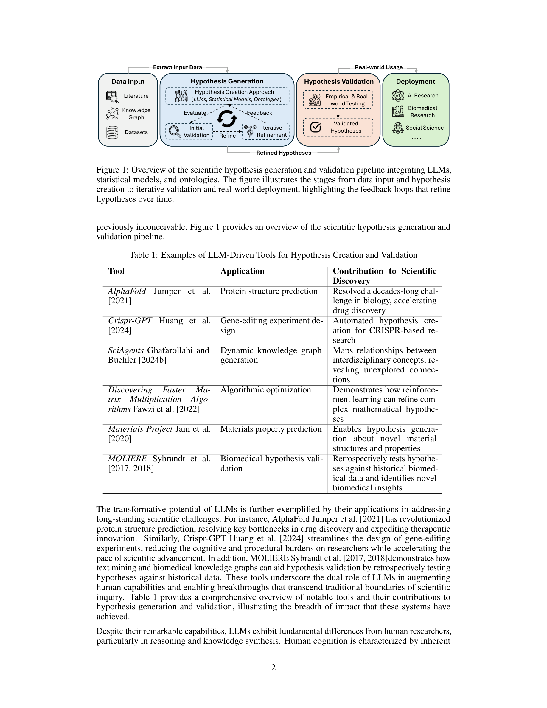

Figure 1
LLM 기반 과학적 가설 생성(hypothesis generation) 및 검증(validation)의 전체 파이프라인을 체계적으로 정리한 대규모 서베이 논문으로, 초기 기호 기반 발견 시스템(BACON, KEKADA)부터 현대 LLM 파이프라인, 멀티에이전트 아키텍처까지를 아우른다.
LLM을 활용한 과학적 가설 생성 및 검증 분야의 가장 포괄적인 서베이 중 하나로, 이 분야에 진입하는 연구자들에게 훌륭한 참고 자료가 된다. 특히 9+10개의 세부 방법론 분류 체계, 30개 이상의 데이터셋 매핑, 그리고 가설 품질 평가의 수학적 프레임워크는 후속 연구의 토대가 될 수 있다. 다만, 넓은 범위를 다루는 대가로 개별 방법론에 대한 깊이가 부족하며, 실증적 비교 실험 없이 문헌 정리에 머무는 점이 아쉽다. AI for Science 연구자가 "어떤 방법론이 있는지" 전체 지형도를 파악하는 데는 매우 유용하지만, "어떤 방법론을 선택해야 하는지"에 대한 실질적 가이드로는 한계가 있다.
| 항목 | 점수 (1-5) |
|---|---|
| Novelty | 3 |
| Technical Soundness | 3 |
| Significance | 3 |
| Overall | 3.0 |
총평: LLM 기반 과학적 가설 생성의 방법론과 평가를 종합한 서베이로 연구 지형도 파악에 유용하나 정량적 비교가 부재하다.